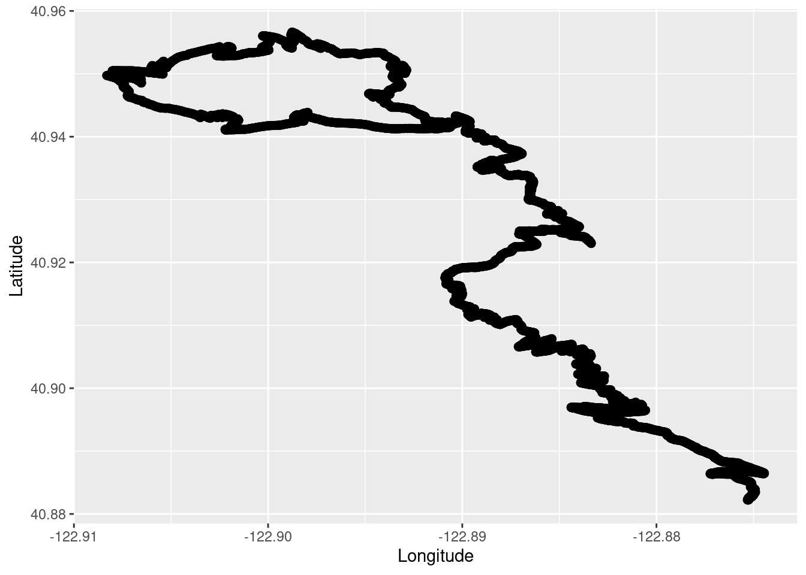
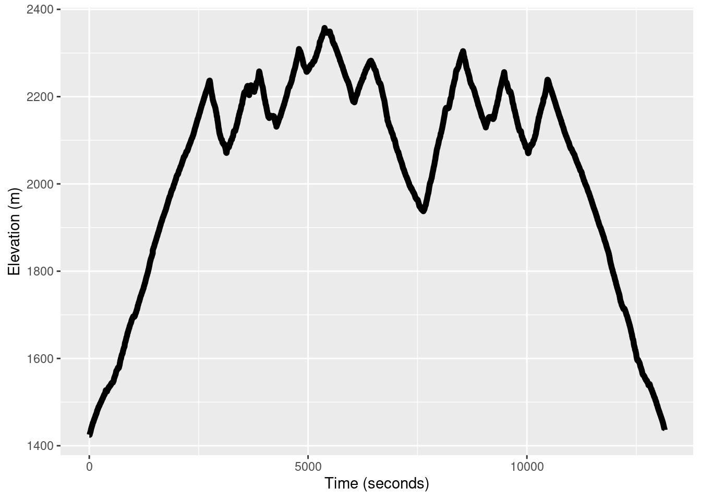
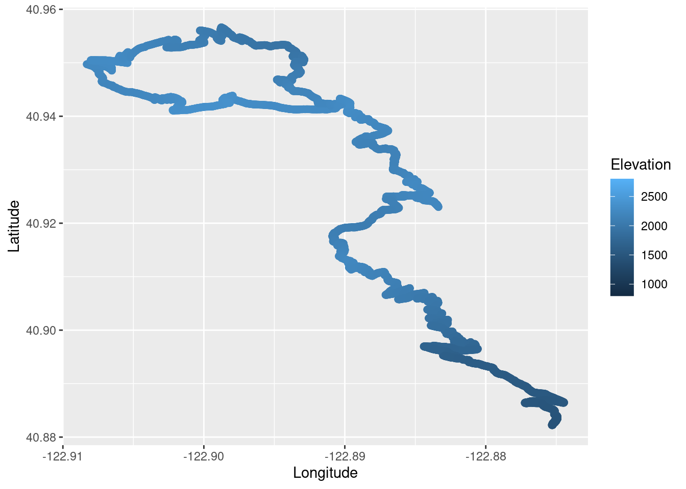
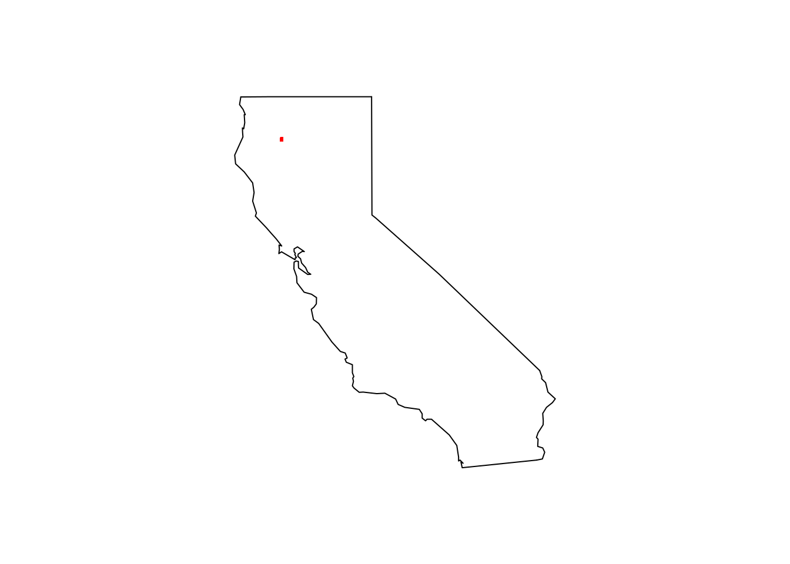
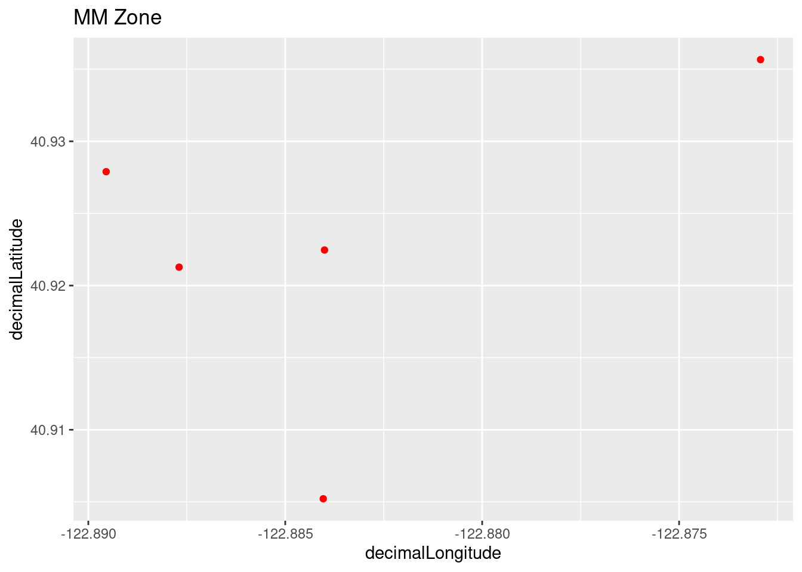
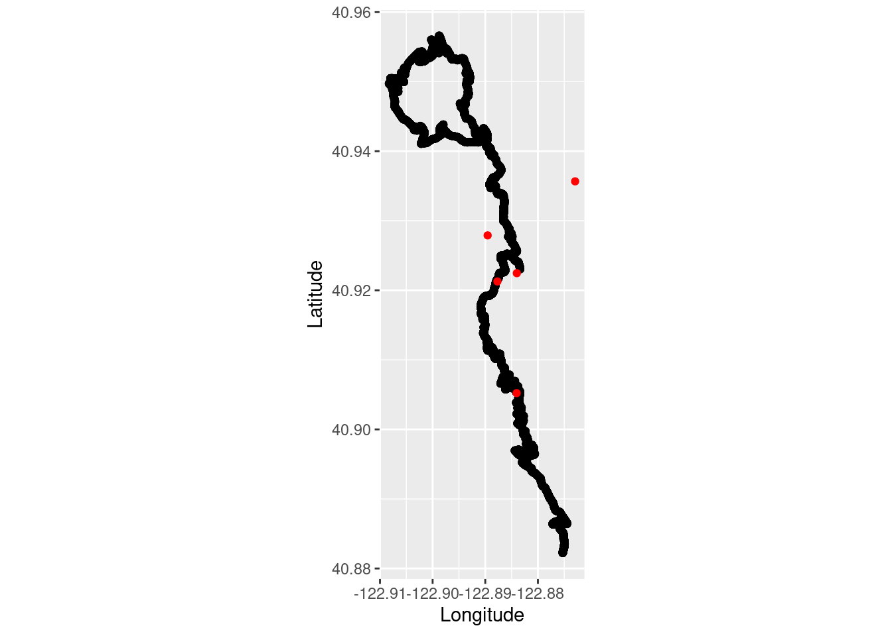
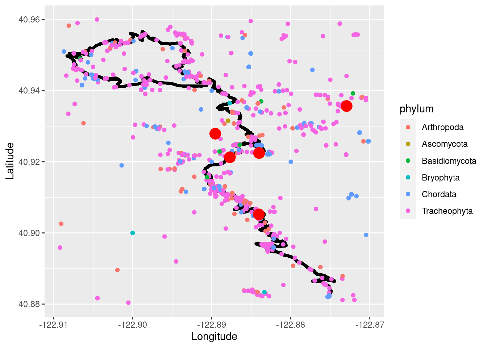

library(tidyverse)
library(gpx)
library(rgbif) Western White Pine Cone Illustration
Introduction
I recently revisited one the conifer species that occur in the Miracle Mile, but by trail running in the Trinity Alps Wilderness area in the Klamath range of Northern California. I found a number of cool species, but one recognizable one was the Western White Pine (Pinus monticola). Pinus monticola is found in many of the cool trail running spots I frequent. Here is another post about another trail run with Pinus monticola.
Load the libraries.
In-file the trail run gps data and make a data frame to use for plotting.
run <- read_gpx('~/DATA/data/Trinity-Alps-TrailRunning-2022-10-08-route.gpx')
summary(run) Length Class Mode
routes 1 -none- list
tracks 1 -none- list
waypoints 1 -none- listTrailRun1 <- as.data.frame(run$routes)
TrailRun1$Time <- as.numeric(row.names(TrailRun1))Make a quick plot using the latitude and longitude coordinates.
TR_p1 <- ggplot() +
geom_point(data = TrailRun1, aes(x = Longitude, y = Latitude), color = 'black', size = 2) +
xlab("Longitude") + ylab("Latitude")
TR_p1
Take a look at the elevation profile of the run.
TR_p2 <- ggplot() +
geom_line(data = TrailRun1, aes(x = Time, y = Elevation), color = 'black', size = 2) +
xlab("Time (seconds)") + ylab("Elevation (m)")
TR_p2
We can also plot the run and false color it based on the elevation.
TR_p3 <- ggplot() +
geom_point(data = TrailRun1, aes(x = Longitude, y = Latitude, color = Elevation), size = 2) +
scale_color_continuous(limits=c(800,2800))
TR_p3
Using the Latitude and Longitude coordinates of the area we can make a general area polygon to be used for a GBIF species observation query to the public database.
trinity_geometry <- paste('POLYGON((-122.91 40.88, -122.87 40.88, -122.87 40.96, -122.91 40.96, -122.91 40.88))')
mm_species <- c("pinus monticola") # can add multiple species here for larger query
whitepine_data <- occ_data(scientificName = mm_species, hasCoordinate = TRUE, limit = 10000,
geometry = trinity_geometry)
whitepine_dataRecords found [5]
Records returned [5]
Args [hasCoordinate=TRUE, occurrenceStatus=PRESENT, limit=10000, offset=0,
scientificName=pinus monticola, geometry=POLYGON((-122.91 40.88, -122.87
40.88, -122.87 40.96, -122.91 40.96, -122.91 40.88))]
# A tibble: 5 × 73
key scien…¹ decim…² decim…³ issues datas…⁴ publi…⁵ insta…⁶ publi…⁷ proto…⁸
<chr> <chr> <dbl> <dbl> <chr> <chr> <chr> <chr> <chr> <chr>
1 396113… Pinus … 40.9 -123. cdc,c… 50c950… 28eb1a… 997448… US DWC_AR…
2 396097… Pinus … 40.9 -123. cdc,c… 50c950… 28eb1a… 997448… US DWC_AR…
3 338409… Pinus … 40.9 -123. cdc,c… 50c950… 28eb1a… 997448… US DWC_AR…
4 239748… Pinus … 40.9 -123. cdc,c… 50c950… 28eb1a… 997448… US DWC_AR…
5 254089… Pinus … 40.9 -123. cdc,c… 50c950… 28eb1a… 997448… US DWC_AR…
# … with 63 more variables: lastCrawled <chr>, lastParsed <chr>, crawlId <int>,
# hostingOrganizationKey <chr>, basisOfRecord <chr>, occurrenceStatus <chr>,
# taxonKey <int>, kingdomKey <int>, phylumKey <int>, classKey <int>,
# orderKey <int>, familyKey <int>, genusKey <int>, speciesKey <int>,
# acceptedTaxonKey <int>, acceptedScientificName <chr>, kingdom <chr>,
# phylum <chr>, order <chr>, family <chr>, genus <chr>, species <chr>,
# genericName <chr>, specificEpithet <chr>, taxonRank <chr>, …whitepine_coords <- whitepine_data$data[ , c("decimalLongitude", "decimalLatitude", "occurrenceStatus", "coordinateUncertaintyInMeters",
"institutionCode", "references")]Plot the observations on the California map to see the limited polygon sampled.
maps::map(database = "state", region = "california")
points(whitepine_coords[ , c("decimalLongitude", "decimalLatitude")], pch = ".", col = "red", cex = 3)
Plot all of the observations using ggplot for the zoomed in area.
whitepine_plot1 <- ggplot(whitepine_coords, aes(x=decimalLongitude, y = decimalLatitude)) +
geom_point(color='red') + labs(title = "MM Zone")
whitepine_plot1
Combine trail running and Western White Pine occurrence observations.
run_plot2 <- ggplot() +
coord_quickmap() +
geom_point(data = TrailRun1, aes(x = Longitude, y = Latitude), color = 'black') +
geom_point(data = whitepine_coords, aes(x = decimalLongitude, y = decimalLatitude), color = 'red') +
xlab("Longitude") + ylab("Latitude")
run_plot2
Now to see a random sampling of what other species are also in the area of the trail run.
trinity_species <- occ_data(hasCoordinate = TRUE, limit = 5000,
geometry = trinity_geometry)
trinity_species_coords <- trinity_species$data[ , c("scientificName","phylum", "order", "family", "decimalLongitude", "decimalLatitude","occurrenceStatus", "coordinateUncertaintyInMeters","institutionCode", "references")] Plot the run data, White Pine data, and other species data on the same map. I changed the size of the trail running and White Pine points so they are easier to see. I also just plotted things by Phylum as to not overload the plot by doing all the species!
run_phylum_plot <- ggplot() +
geom_point(data = TrailRun1, aes(x = Longitude, y = Latitude), color = 'black', size = .75) +
geom_point(data = trinity_species_coords, aes(x = decimalLongitude, y = decimalLatitude, color = phylum)) +
geom_point(data = whitepine_coords, aes(x = decimalLongitude, y = decimalLatitude), color = 'red', size = 5, shape = 19) +
xlab("Longitude") + ylab("Latitude")
run_phylum_plot
You can see that there are various species to explore representing Arthropods (Insects, Spiders etc.), Cordates (Animals), Bisidomycota (fungi), and Tracheophyta (vascular plants).